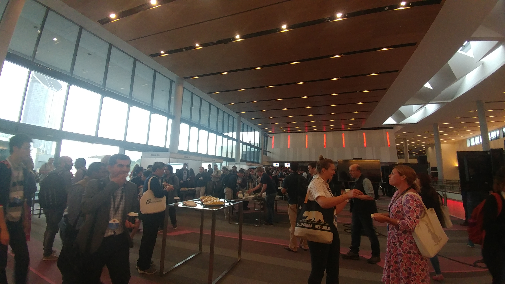
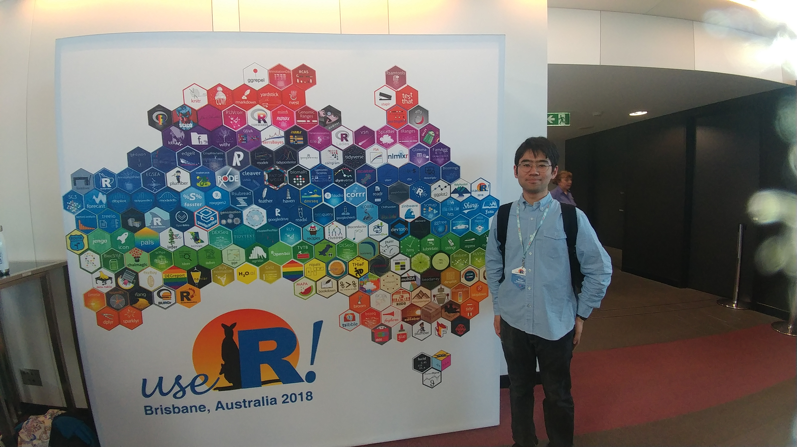
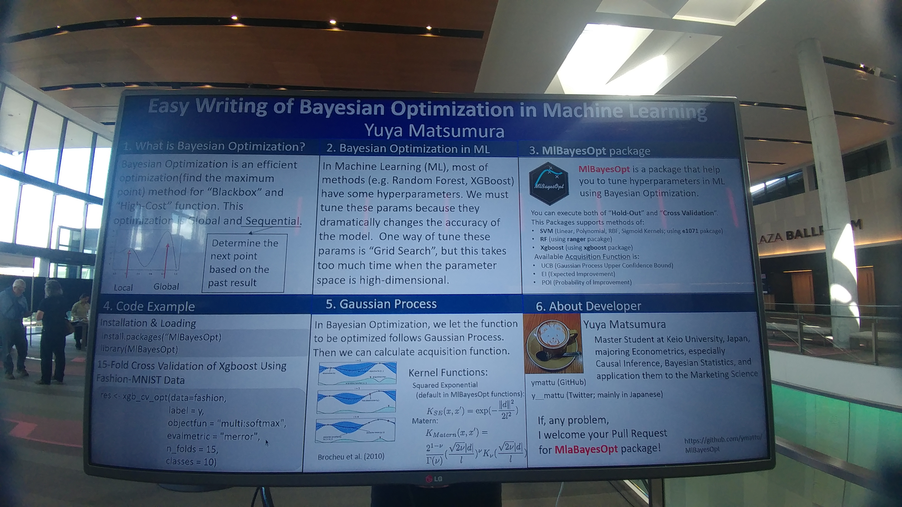

Easy Writing for Bayesian Optimization in Machine Learning
MlBayesOpt package
@y__mattu
Tokyo.R #71
July 15, 2018
Introduction
Profile
- Yuya MATSUMURA
(松村優哉) - Twitter: y__mattu
- GitHub: ymattu
- Graduate student of Keio University
- Studying: Econometrics, Bayesian Statistics, Causal Inference
- Languages: R, Python, SAS

useR!2018
Fantastic Conference

hexwall

Poster Presentation

Today’s Talk:
In short…
- Very short summary of poster presentation at useR!2018
- cf. Global TokyoR #2
- Today’s content is updated.
Summary of this package
About this package
- MlBayesOpt(https://github.com/ymattu/MlBayesOpt)
- This package make it easier to write a script to execute parameter tuning using bayesian optimization.
- SVM(Linear, Polynomial, RBF, Sigmoid Kernels)、Random Forest、XGboost
- Based on following packages:
- SVM(e1071)
- RF(ranger)
- XGboost(xgboost)
- Bayesian Optimization(rBayesianOptimization)
- Wecan use both of “Hold-Out” and “Cross Validation”
MlBayesOpt
Installation and Loading
Installation
install.packages("MlBayesOpt")
devtools::install_github("ymattu/MlBayesOpt")Loading
library(MlBayesOpt)Usage
Hold-Out
SVM
set.seed(123)
res0 <- svm_opt(train_data = iris_train,
train_label = Species,
test_data = iris_test,
test_label = Species,
svm_kernel = "polynomial",
init_points = 10,
n_iter = 1)Output of SVM (Excerpt)
elapsed = 0.01 Round = 1 degree_opt = 5.0000 coef0_opt = 1.2641 Value = 0.9333
elapsed = 0.01 Round = 2 degree_opt = 7.0000 coef0_opt = 7.6410 Value = 0.9333
elapsed = 0.01 Round = 3 degree_opt = 5.0000 coef0_opt = 1.5038 Value = 0.9600
elapsed = 0.01 Round = 4 degree_opt = 4.0000 coef0_opt = 7.6924 Value = 0.9333
elapsed = 0.01 Round = 5 degree_opt = 5.0000 coef0_opt = 8.4372 Value = 0.9333
elapsed = 0.01 Round = 6 degree_opt = 10.0000 coef0_opt = 7.7898 Value = 0.9333
elapsed = 0.01 Round = 7 degree_opt = 8.0000 coef0_opt = 1.4249 Value = 0.9200
elapsed = 0.01 Round = 8 degree_opt = 9.0000 coef0_opt = 8.0788 Value = 0.9333
elapsed = 0.01 Round = 9 degree_opt = 5.0000 coef0_opt = 8.9781 Value = 0.9333
elapsed = 0.01 Round = 10 degree_opt = 6.0000 coef0_opt = 9.2771 Value = 0.9333
elapsed = 0.01 Round = 11 degree_opt = 10.0000 coef0_opt = 4.4448 Value = 0.9333
Best Parameters Found:
Round = 3 degree_opt = 5.0000 coef0_opt = 1.5038 Value = 0.9600 Cross Validation
SVM
set.seed(71)
res0 <- svm_cv_opt(data = iris,
label = Species,
n_folds = 3,
init_points = 10,
n_iter = 1)Output of SVM
elapsed = 0.02 Round = 1 gamma_opt = 3.3299 cost_opt = 11.7670 Value = 0.9333
elapsed = 0.01 Round = 2 gamma_opt = 5.5515 cost_opt = 76.1740 Value = 0.9067
elapsed = 0.01 Round = 3 gamma_opt = 3.2744 cost_opt = 14.1882 Value = 0.9400
elapsed = 0.01 Round = 4 gamma_opt = 2.1175 cost_opt = 76.6932 Value = 0.9200
elapsed = 0.01 Round = 5 gamma_opt = 3.1619 cost_opt = 84.2154 Value = 0.9600
elapsed = 0.01 Round = 6 gamma_opt = 9.4727 cost_opt = 77.6772 Value = 0.8933
elapsed = 0.01 Round = 7 gamma_opt = 6.6175 cost_opt = 13.3914 Value = 0.9267
elapsed = 0.02 Round = 8 gamma_opt = 8.8943 cost_opt = 80.5955 Value = 0.8733
elapsed = 0.01 Round = 9 gamma_opt = 3.3808 cost_opt = 89.6793 Value = 0.9333
elapsed = 0.01 Round = 10 gamma_opt = 4.3481 cost_opt = 92.6987 Value = 0.9000
elapsed = 0.01 Round = 11 gamma_opt = 2.9508 cost_opt = 84.8600 Value = 0.9467
Best Parameters Found:
Round = 5 gamma_opt = 3.1619 cost_opt = 84.2154 Value = 0.9600 XGboost
set.seed(71)
res0 <- xgb_cv_opt(data = iris,
label = Species,
objectfun = "multi:softmax",
evalmetric = "mlogloss",
n_folds = 3,
classes = 3,
init_points = 2,
n_iter = 1)
)About arguments
ex. “Hold Out” using SVM
res <- svm_opt(
# about dataset (at least required)
train_data = iris_train,
train_label = Species,
test_data = iris_test,
test_label = Species,
# about hyper parameters (optional, default is following)
svm_kernel = "radial", # RBF
gamma_range = c(10 ^ (-5), 10 ^ 5),
cost_range = c(10 ^ (-2), 10 ^ 2),
# about bayesian optimization (optional, default is following)
init_points = 20,
n_iter = 1,
acq = "ei",
kappa = 2.576,
eps = 0.0,
optkernel = list(type = "exponential", power = 2)
)Future Works
This package is still a development version…
- Fix some bugs
- Make functuions about Deep Learning…? (mxnet package…?)
Enjoy R programming !
This slide is made from revealjs package.
This slide and Rmd file are published on Git Hub(https://github.com/ymattu/TokyoR71).